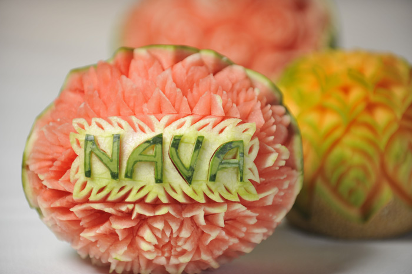
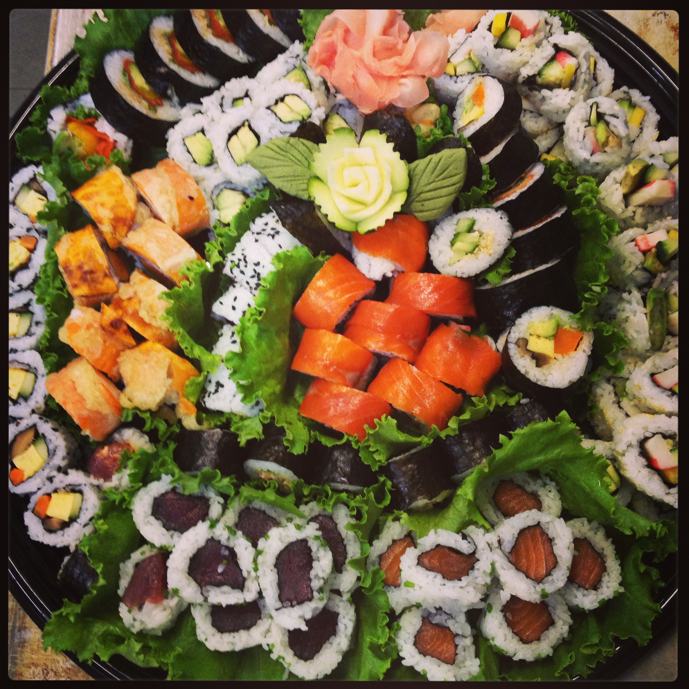
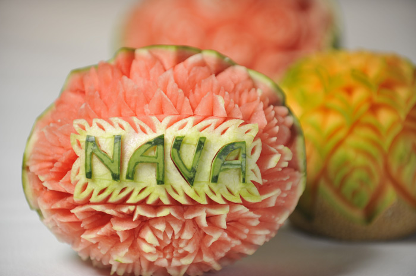
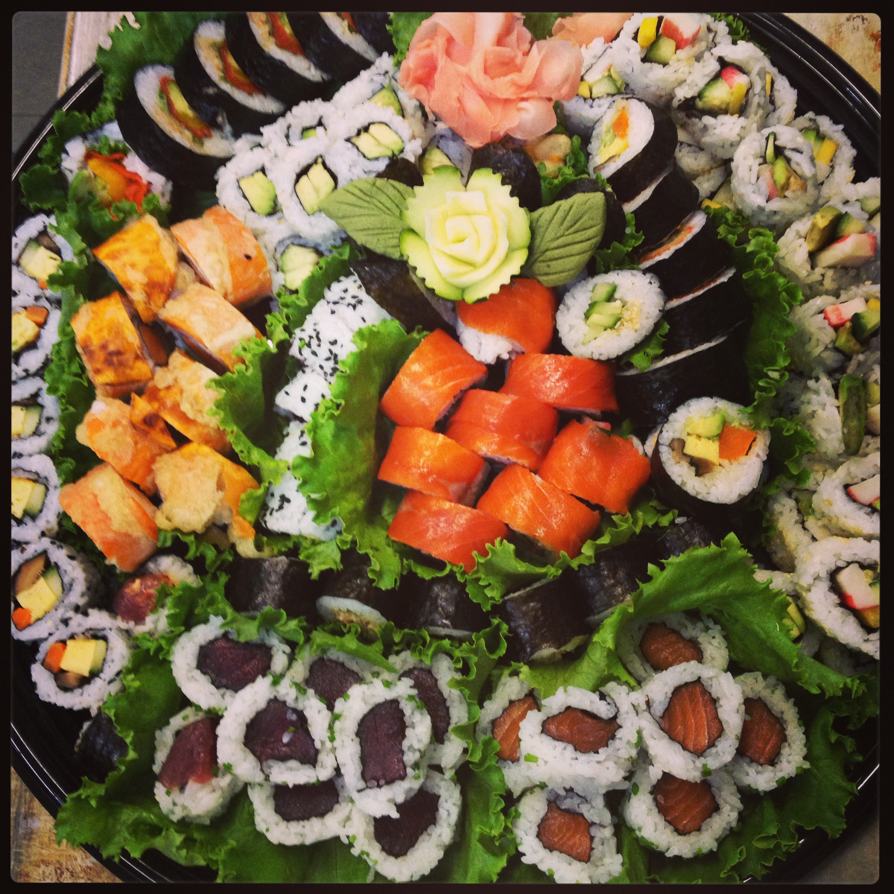

What can we do for you?
Consistency, quality, and peace of mind – three things you can always expect from Nava Creative. From your first contact with us to your last bite, our team will take care of all your catering needs. We have a proven reputation of providing our customers with exquisite food and first-class service. Our diverse and experienced chefs bring their own unique backgrounds to our kitchen to create tantalizing and exotic flavours that blend traditional and modern cooking.
Full Service Catering
Customized menus for events up to 1000 people. Cocktail Receptions, BBQs, Bar and Bat Mitzvahs, Weddings and Galas.
Take Out & Home Delivery
Private parties, Shabbat, holidays and life cycle events.
Café
Serving vegetarian breakfast, lunch, snacks and light dinners. Parve and non-Cholov Israel.
Visitors to BC
Visiting Vancouver, Whistler & Victoria? Order Kosher meals to be delivered directly to your hotel or tour company.
 



There will only ever be one event like the one you’re planning now.
Special Events
Weddings, Bar & Bat Mitzvahs, Birthdays, Engagements, Anniversaries, Graduations, Life Cycle Events, Galas, Fundraisers.
Holiday Catering
Whatever holidays you celebrate, let us take care of the cooking. We offer take-out and full service catering for all the holidays. Please check back a couple months before the next holiday to review our offerings.
Corporate Catering
Allow yourself some indulgence in your busy schedule. We offer corporate drop-off services for your lunch meetings, and catering services for holiday parties and cocktail receptions.
Our Team
Susy Siegel
Owner and head chef, Susy Siegel started catering over 25 years ago when her passion for entertaining and natural facility in the culinary arts manifested into a small, but flourishing catering company. Susy is originally from Mexico City, where the flavours, odors, and colors of Latin Cuisine blend with Continental cooking. She spent several years in Israel where she added to her repertoire the nuances of Mediterranean and Middle Eastern Cuisine. It is no wonder that Susy possesses a special skill and sensibility for all types of ethnic cooking.
In addition to her impeccable reputation in the kitchen, she is well known for creating exceptional working relations with her clients. In this regard, what seldom fails to be mentioned enthusiastically by her clientele is the sense of trust and calm that Susy instills in them, making them feel that they can hand the reins over to Susy and expect every single detail to be addressed with success from beginning to end. In the words of one such client, “I feel as if my event is the only one being catered in town.”
Eran Rozen
Israeli-born chef Eran Rozen grew up in a small town south of coastal Tel Aviv and spent most of his life in Jerusalem. Following seventeen years of service in the Israeli Police Force, Chef Rozen moved to Canada with his wife and two young boys. The move became an opportunity for him to follow his dream of becoming a professional chef, one which began with his Sephardic grandmother, whose culinary lessons and secrets continue to guide his work today. He and his family settled in Vancouver, where Chef Rozen enrolled in the Pacific Institute of Culinary Arts. He then gained important experience working in both traditional French Bistros and Patisseries as well as in the catering industry, followed by the opening of Gaia Bistro, his own classically-inspired Mediterranean and North African restaurant.
Since closing the restaurant, Chef Rozen has worked side-by-side with owner Susy Siegel as the executive chef of Nava Creative Kosher Cuisine, Vancouver’s premier kosher caterer. With the help of his experienced, multicultural staff, Chef Rozen enjoys working at the heart of Vancouver’s Jewish community. He seeks to provide traditional Jewish menus as well as modern kosher reimaginings of international flavours, using his classical training, his own familial influences, and the culinary experiences of his diverse and talented staff.